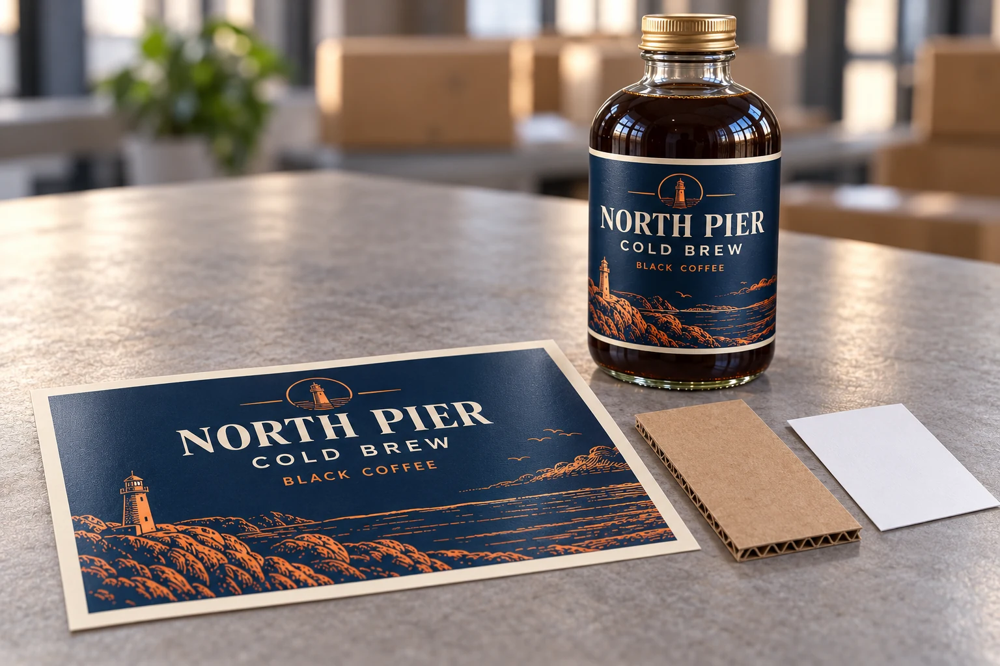

One supplier sends a photo marked “passed.” Another sends a rub count. Purchasing wants a decision before the next cold-brew label order closes.
The numbers look comparable. The conditions may not be.
In an illustrative buying scenario, one printer rubs a dry label against smooth paper. The other uses a damp sample against a different contact material. Neither result, by itself, tells the buyer which label will survive the same shipping carton. A bigger count does not settle that argument.
Compare the test conditions before comparing the finish price. Then approve a construction against an agreed reference and acceptance rule. That is a more useful purchase than a label described only as “scuff resistant.”

Diagnose the mark before buying another layer
Photograph where damage occurs on the filled package. Keep an undamaged sample from the same delivery. Ask what touched that exact area: a guide rail, another bottle, a divider, a wet hand or a wiping cloth.
Ink loss at repeated contact points suggests a different investigation from a whole display becoming paler over time. For the latter, use the separate label ink fading and lightfastness guide. Poor print adhesion, moisture damage and a carton that permits movement also need different remedies.
A buyer trying to protect a dark solid panel should not have to pay for laminate before the contact problem is understood. Sometimes a compatible varnish is sufficient. Sometimes a film barrier is justified. Sometimes the divider needs changing.
What a scuff test method can establish
ASTM D5264-98(2019) describes a laboratory practice for comparing abrasion resistance of printed materials, including labels on flat substrates, using a Sutherland-type tester or equivalent. Its public summary supports comparison under defined conditions; it is not a universal freight guarantee.
Ask the testing party to identify the method and edition actually used. A hand wipe on a bottle may help investigate a complaint, but describe it as a handling screen. If a laboratory method is modified to use a particular carton surface or liquid, record the departure and its purpose. Do not quietly present the modified result as an unqualified standard-method pass.
The full procedure and an appropriate testing specialist are needed when contractual conformity is required. This guide supplies purchasing questions, not replacement operating instructions.
Require these fields on both supplier reports
Send the same reporting request to each supplier before making a finish comparison.
| Field | What must be identifiable |
|---|---|
| Sample identity | Artwork revision, print lot, face stock, ink system and exact finish |
| Sample history | Printing/finishing date, conditioning and time before testing |
| Method | Named method, edition, equipment and any modifications |
| Contact material | Receptor identity, contact face, orientation and replacement rule |
| Mechanical settings | Load, speed, travel and the instrument's counting convention |
| Exposure | Dry or wet; liquid, quantity/application method and contact time where relevant |
| Test coverage | Number of specimens, sampled locations and tested print areas |
| Evaluation | Viewing conditions, retained reference and agreed rejection criteria |
| Evidence | Individual results, photographs and both rubbed surfaces retained where practical |
“One hundred rubs” is incomplete until both parties know what the instrument counts and what was rubbing. Ask the lab to explain its stroke or cycle convention rather than converting a number by guesswork.
Likewise, a white paper receptor and a corrugated divider are different comparison conditions. The photograph below shows those materials beside a branded print sample. It does not demonstrate a valid machine setup or rank either finish.

Keep dry abrasion, wet rubbing and transfer separate
Danilee, the Sutherland equipment manufacturer, lists separate dry-rub, wet-rub, wet-transfer and wet-smear procedures in its rub-testing guidance. It also distinguishes functional tests involving particular products or liquids. Those names should not disappear into one “durability” column.
For a refrigerated beverage, decide which question needs answering: abrasion during dry packing, handling after condensation, or exposure to spilled product. Specify each relevant exposure with the testing party. Water applied directly to a sample and condensation developing on a chilled bottle are not automatically equivalent conditions.
Record when inspection happens, too. A wet specimen's appearance and its condition after drying may answer different questions. Use the waterproof beverage label material guide for the broader moisture and adhesive discussion; an abrasion result alone does not approve the bond to the bottle.
Write the rejection rule before receiving the shipment
Start with the areas that matter: the brand name, required information, dark solids and any variable printing. Agree how to distinguish ink transfer, scratches, gloss change, substrate damage and edge lift. They should not all become one unexplained score.
Danilee's guidance recommends comparing an acceptable sample under the same conditions and considering the interval between printing and testing. Keep an approved physical reference, an untouched control and the relevant test pieces. Photographs help locate damage; consistent viewing conditions matter when they are used for approval.
Do not demand “absolutely no change” unless that is a defined, achievable requirement supported by the trial. Equally, a brand panel looking acceptable cannot excuse illegible information elsewhere. Where a numerical color or gloss limit is needed, agree the measurement method and threshold in advance with the specialist.
Check the finished pack's lot/date marking separately if it is printed after the protective finish. A report on the preprinted artwork does not automatically cover that later ink, ribbon or coding operation. If the design includes retail codes, use the relevant code-verification process as well; an abrasion photo cannot certify a barcode grade.
Give varnish a fair trial and laminate a specific job
Sun Chemical's 2021 announcement about protective varnishes describes a range developed for HP Indigo printed labels. The useful lesson is compatibility: a named coating is designed around a print system. It does not prove that any varnish will protect any ink, or that this website uses that range.
Compare actual proposed constructions, with the same artwork and reporting conditions. Ask what changed between them and include finishing, sampling and testing costs in the order comparison. Use the label lamination guide to discuss the added film and its practical tradeoffs.
A dry, low-contact route may justify a simpler construction after a suitable trial. Repeated wet handling may justify more protection. Neither decision should rest on the word “premium.”
Return the approved label to its carton
A flat comparison is useful evidence. The filled package still needs a relevant pack-out and distribution assessment, particularly when the damage follows bottle contact or divider edges. Define that work with the packaging or testing specialist; do not translate bench rub counts into miles of transport.
Keep the carton, divider, fill condition and packing arrangement with the approval record. When one changes, decide whether the earlier evidence still applies. For repeat orders, identify which artwork, material, ink or finish changes require another trial. An old report belongs to its recorded construction, not every future reorder.
Ask for a review that starts with evidence
Send a label durability review request through the contact page, including the package and carton photos, failed and retained samples if available, intended moisture exposure, label size, quantity and existing supplier report. Send attachments through the listed email or WhatsApp route; the form opens an email draft.
Ask which construction options and test evidence can actually be provided, and whether outside testing is needed. The first useful answer is a comparable plan. A price for another protective layer can follow it.